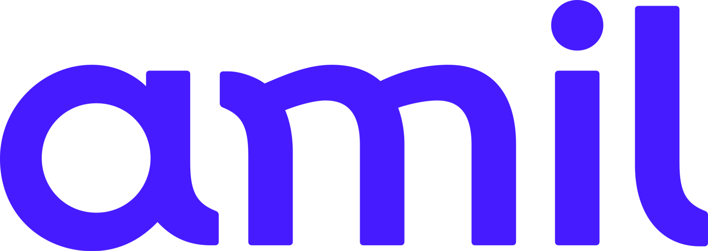

Amil Empresarial · PME
Boa cobertura, bons hospitais e excelente custo-benefício.
Planos Amil para empresas que buscam equilíbrio entre qualidade assistencial e economia. São diferentes linhas nacionais, com acesso a hospitais, clínicas, laboratórios e serviços digitais, de acordo com o produto contratado.
Rede nacionalOpções com coparticipaçãoAlternativas com reembolsoOpções com Amil Dental

Saúde de qualidade com escolhas para cada perfilConheça as linhas Amil PME e encontre a combinação de rede, acomodação e benefícios adequada à sua empresa.Linhas e opções
Uma linha para cada necessidade
O portfólio PME contempla opções de entrada, intermediárias e categorias superiores. A rede, a acomodação, a coparticipação e os serviços variam conforme a linha e a contratação.
Amil Prata
Uma alternativa nacional com ampla rede credenciada nas principais cidades e foco em custo-benefício.
- Acomodação em enfermaria ou apartamento, conforme produto.
- Opções de coparticipação total ou parcial.
- Telemedicina Amil e descontos em farmácias.
- Amil Espaço Saúde e Programa Primeiros Cuidados, conforme disponibilidade.
- Transplantes adicionais em produtos elegíveis.
Amil Ouro
Uma opção para quem busca hospitais de referência e possibilidade de reembolso em consultas e honorários médicos.
- Abrangência nacional.
- Enfermaria ou apartamento, conforme produto.
- Coparticipação total ou parcial.
- Reembolso conforme regras e limites do plano.
- Telemedicina, descontos em farmácia e transplantes adicionais.
Amil Platinum
Uma linha nacional com acomodação em apartamento, opções de reembolso e acesso a hospitais renomados.
- Reembolso para consultas e honorários médicos.
- Telemedicina e coleta domiciliar em produtos elegíveis.
- Cirurgia refrativa sem limite de grau, conforme cobertura.
- Retaguarda hospitalar em instituições selecionadas.
- Benefícios adicionais conforme a categoria.
Amil Black
Produtos voltados a quem procura uma experiência diferenciada, rede de excelência e benefícios especiais.
- Rede nacional e acomodação em apartamento.
- Reembolso para consultas, honorários e terapias, conforme produto.
- Telemedicina Amil Black e Amil Resgate.
- Espaço Amil Exclusivo e retaguarda em hospitais premium.
- Assistência de viagem internacional.
Benefícios exclusivos
Nas categorias superiores Black II e S6500, o material destaca serviços e estruturas adicionais.
- Concierge exclusivo e Rede Exclusiva Black.
- Check-up, conforme regras do produto.
- Consulta domiciliar em localidades elegíveis.
- Coleta domiciliar de exames e vacinas previstas.
- Benefícios complementares e retaguarda premium.
S380, S450 e S750
Alternativas nacionais que ampliam as possibilidades de escolha dentro do portfólio Amil.
- S380: Amil Espaço Saúde, reembolso e transplantes adicionais.
- S450: maior capilaridade de rede e hospitais de excelência.
- S750: mais níveis de reembolso e benefícios complementares.
- Rede e serviços definidos por produto e região.
Benefícios assistenciais
Mais cuidado no dia a dia
Além da rede credenciada, determinados produtos Amil contam com recursos que ampliam a conveniência e o suporte ao beneficiário.
Telemedicina Amil
Atendimento médico remoto, incluindo modalidades eletivas e de urgência conforme o produto.
Amil Espaço Saúde
Estrutura de cuidado e acompanhamento em unidades disponíveis na área de abrangência do plano.
Programa Primeiros Cuidados
Orientação e suporte para necessidades de saúde, conforme os serviços previstos na linha contratada.
Reembolso
Possibilidade de reembolso em produtos elegíveis, respeitando limites, múltiplos e regras contratuais.
Transplantes adicionais
Produtos selecionados podem oferecer cobertura para transplantes além do rol obrigatório, conforme condições do plano.
Amil Resgate
Atendimento pré-hospitalar e remoção especializada nos produtos e localidades previstos.
Coleta domiciliar
Coleta de exames em domicílio por parceiros e nas regiões atendidas, conforme elegibilidade.
Assistência em viagem
Assistência para urgências e emergências em viagens internacionais nos produtos que oferecem o benefício.
Descontos em farmácias
Condições especiais em redes e estabelecimentos parceiros, conforme regras vigentes.
Check-up
Benefício disponível em categorias selecionadas, mediante critérios e rede previstos no produto.
Concierge e rede Black
Serviços diferenciados e acesso à rede exclusiva em categorias superiores da linha Amil Black.
Benefícios complementares
Alguns produtos incluem cirurgia refrativa, vacinas, RPG, hidroterapia e escleroterapia, conforme limites e condições.
Sorriso também é saúde
Amil Dental pode acompanhar o plano médico.
O material comercial apresenta condições promocionais de inclusão do plano odontológico em determinadas contratações PME. Há opções promocionais por período determinado e uma modalidade específica para o Amil Black II.
Amil Dental promocional por 12 meses em produtos elegíveisAmil Black Dental incluído no Amil Black II, conforme material comercialCobertura odontológica prevista no Rol da ANSRede odontológica em todo o BrasilSem coparticipação no Dental promocional indicadoBlack Dental: próteses em cerâmica, implantes e tratamento ortodôntico
Hospitais e clínicas de destaque
Os materiais PME de março e junho de 2026 citam instituições de referência em diferentes categorias. Os exemplos abaixo não significam que todos estejam disponíveis em todos os produtos: a rede depende da linha, da cidade e da versão contratada.
Hospital Mater Dei — BahiaHospital Português — Bahia
Hospital Jorge Valente — BahiaCOT — Bahia
Monte Klinikum — CearáHospital São Mateus — Ceará
Hospital Santa Joana — PernambucoReal Hospital Português — Pernambuco
Hospital Promater — Rio Grande do NorteHospital do Coração de Natal — Rio Grande do Norte
Conteúdo elaborado com base nos materiais comerciais “Produtos Amil – Março/2026” e “Treinamento Produtos Amil PME – Junho/2026”. Benefícios, rede credenciada, acomodação, coparticipação, reembolso, serviços odontológicos e promoções variam conforme o produto, a região, o porte da empresa e as regras vigentes. A inclusão promocional do Dental pode ter prazo determinado e condições próprias; confirme a oferta disponível antes da contratação. A página não apresenta preços ou mensalidades.
Vamos encontrar a melhor opção Amil para sua empresa?
Converse com Gerry Dias e conheça as alternativas de rede, benefícios e custo-benefício para seu CNPJ.